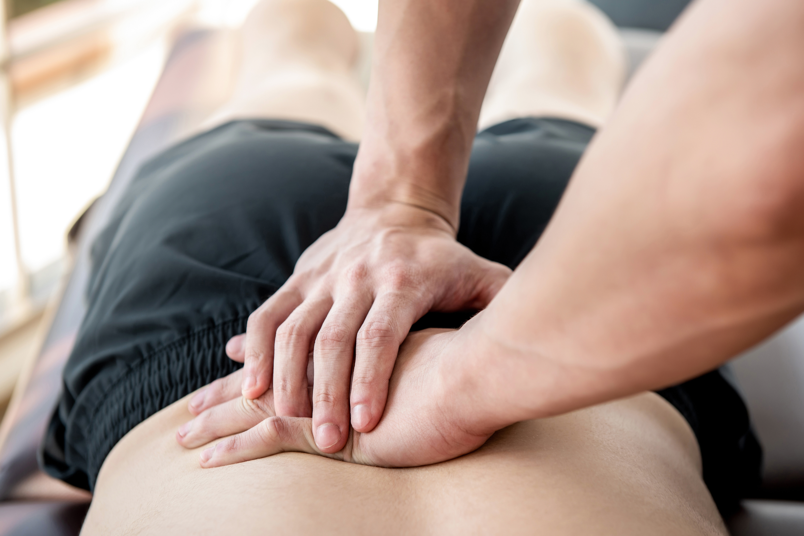
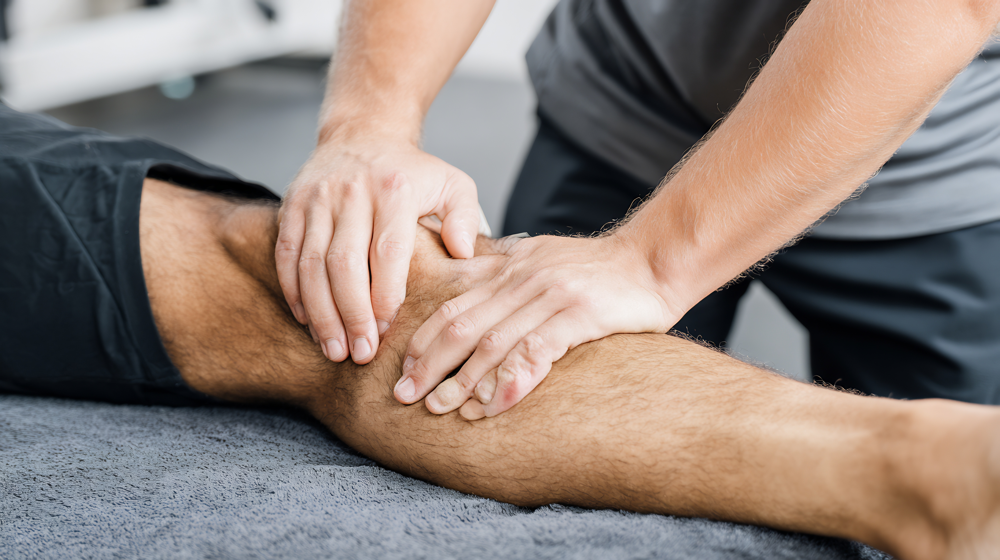

Sports & Remedial Massage in the City of London That Helps You Move Better
Whether you're recovering from an injury, struggling with persistent muscle tension or looking to improve your mobility, sports and remedial massage can help you move with greater ease and confidence.
At Strong & Flexible, I take a different approach to sports and remedial massage in London. Rather than focusing solely on the area that hurts, I assess how your whole body moves to understand what may be contributing to your symptoms. This allows treatment to be tailored to your individual needs, helping to relieve discomfort while supporting better movement and long-term recovery.
Whether you're an office worker dealing with neck and shoulder tension, a runner preparing for your next event or someone looking to stay active without pain, every session is designed around your goals.
Book your Sports & Remedial MassageWhy Choose Strong & Flexible?
- One-to-one appointments tailored to your individual needs
- Experienced working with active individuals, office workers and people recovering from injury
- Practical advice and exercises to support your progress between appointments
- Convenient London location close to Liverpool Street and the City of London
- A whole-body approach focused on long-term movement, not just short-term relief
Ready to get started? Contact Strong & Flexible to book your appointment.
What Is Sports & Remedial Massage?
Sports and remedial massage is a hands-on treatment designed to reduce muscle tension, improve mobility and support recovery from injury or physical strain. Although many people associate it with athletes, it can benefit anyone experiencing muscular discomfort, stiffness or restricted movement.
I don't just 'rub' tight muscles. Often, a muscle is tight because it is neurologically locked, acting as an artificial exoskeleton to protect an unstable joint. Using advanced soft tissue techniques, including targeted motor control integration, we release the tissue and immediately retrain the nervous system to accept the new range of motion. If you don't integrate the newly freed tissue into your nervous system's map, the tightness will just return the next day.
That's why my approach goes beyond massage alone.
Every session begins with an assessment of how you move. By looking at movement patterns across the whole body, I can identify restrictions and compensations that may be contributing to your symptoms. This helps ensure treatment is targeted at the underlying cause rather than simply chasing pain from one area to another.
For clients experiencing ongoing pain, recurring injuries or more complex movement issues, a dedicated Movement Assessment provides a more detailed picture and can form the basis of a personalised treatment plan.
See All ServicesWho Is Sports & Remedial Massage For?
Sports and remedial massage isn't just for athletes. It can help anyone experiencing muscular pain, stiffness or restricted movement, whether your symptoms are caused by sport, work or everyday life.
You may benefit if you:
- Have neck and shoulder tension from desk work
- Experience recurring muscle tightness or stiffness
- Are recovering from a minor sports injury
- Feel sore after running, cycling or gym sessions
- Want to improve flexibility and mobility
- Have muscular aches that affect work, exercise or daily life
- Want to stay active while reducing your risk of future injury

Whether you're an office worker, recreational athlete or someone simply looking to move more comfortably, treatment is tailored to your individual goals rather than following a one-size-fits-all approach.
My Approach to Sports & Remedial Massage
Every person moves differently, so every session begins by understanding your symptoms, lifestyle and what you want to achieve. Rather than treating the painful area in isolation, I assess how your body moves to identify restrictions and compensations that may be contributing to the problem.
Using this information, I tailor your treatment to your individual needs. Your session may include sports and remedial massage techniques, mobility work and practical movement advice to help you maintain your progress between appointments.
For instance, chronic right shoulder or bicep tendinopathy is rarely a shoulder issue. It is often the result of the upper body attempting to drag a locked, non-propulsive lower body forward. I treat the local tissue to reduce pain, but I also address the biomechanical root cause so the tension stops returning.
My aim isn't simply to reduce pain during your session. It's to help you move more efficiently, place less unnecessary strain on your body and improve the way you feel during work, training and everyday life.
If you're dealing with persistent or recurring issues, I may recommend a Movement Assessment to gain a deeper understanding of how your body moves and develop a personalised treatment plan.
Find Out More About Strong and Flexible
Supporting Clients Across London
Strong & Flexible is based in the City of London and welcomes clients from across the surrounding areas, including Liverpool Street, Moorgate, Bank, Aldgate, Monument and Shoreditch.
Many clients work in busy office environments where prolonged sitting, commuting and workplace stress contribute to muscular tension and reduced mobility. Others are runners, cyclists, gym members or recreational athletes looking to recover more effectively and stay active.
Wherever you're starting from, treatment is tailored to your individual goals, helping you move with greater confidence and less discomfort.
Frequently Asked Questions
Is sports and remedial massage only for athletes?
No. Despite the name, sports and remedial massage is suitable for anyone experiencing muscular pain, stiffness or movement restrictions. Many of my clients are office workers, recreational exercisers or people looking to improve everyday movement.
Will treatment be painful?
Some areas may feel tender, particularly if muscles are tight or sensitive, but treatment should always be within a comfortable level. I adjust pressure and techniques based on your needs and feedback throughout the session.
How many sessions will I need?
The number of sessions depends on your symptoms and goals. Some people feel significant improvement after one appointment, while ongoing or recurring issues may benefit from a course of treatment combined with movement-focused exercises.
Book Your Sports & Remedial Massage in City of London
If muscular pain, stiffness or recurring tension is affecting the way you work, train or enjoy everyday life, sports and remedial massage could help you move more freely and with greater confidence.
At Strong & Flexible, every session is tailored to your individual needs, combining hands-on treatment with movement assessment to address more than just your symptoms. Whether you're recovering from injury, managing work-related aches or looking to improve your movement, the focus is on helping you achieve lasting results.
Ready to get started? Contact Strong & Flexible today to book your Sports & Remedial Massage in London.